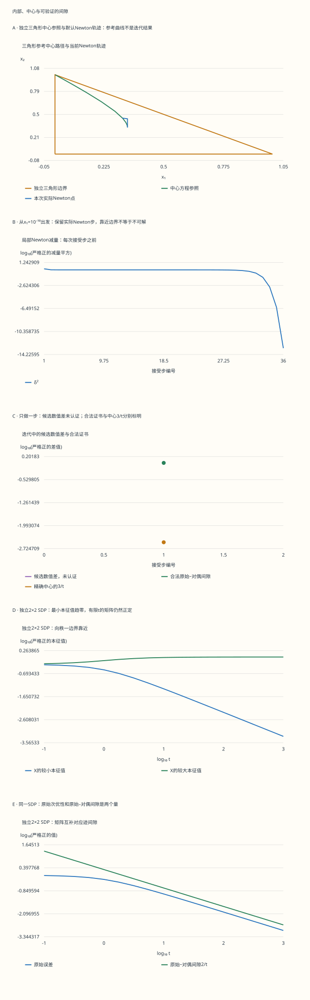

本页目录
凸优化 IV · 内点法与 SDP：从内部轨迹到精度证书
先修：共轭与对偶、一阶方法、变量分裂，以及正定矩阵与 Newton 法。目标：正确构造中心点的对偶证书，知道有限 Newton 迭代还差什么；把标量互补推广到矩阵互补，并说明复杂度定理的起点和边界。
学习层：走在内部，不代表已经走在中心路径上
把一张三角形可行域放在桌面上。目标希望把点推向一个顶点，对数障碍则把点从边界推开。两种作用精确平衡时，才能读出中心路径的间隙公式。只走一步 Newton，虽然点仍在内部，平衡关系却可能还差很远。
实验保留每一步的梯度、Hessian、方向和全部回溯尝试。默认图同时标清独立的精确中心参考与本次真实迭代；另一个二阶矩阵 SDP 用完整矩阵检查正定性和互补。它们各自有明确的问题，不把参考曲线当成失败运行的结果。
无脚本对照：图表读取同一份六组固定记录。LP失败行不会填入一个虚构中心点；最后一列属于另一个已明确说明的二阶SDP模型。

| 预设 | LP状态 | 接受步数 | 候选数值差（未认证） | 合法LP证书 | 独立SDP间隙 |
|---|---|---|---|---|---|
| normal | 达到数值容差 | 4 | 3 | 3 | 2 |
| t1000 | 达到数值容差 | 10 | 0.003 | 0.003 | 0.002 |
| near | 达到数值容差 | 36 | 3 | 3 | 2 |
| one | 步数耗尽 | 1 | -1.42543076 | 0.565972222 | 0.002 |
| noStrict | 无严格内部 | 0 | 无LP终点 | 无LP终点 | 2 |
| boundary | 初值不合法 | 0 | 无LP终点 | 无LP终点 | 2 |
下载六组完整固定记录。记录包含所有Newton候选、标量根浮点区间和完整SDP矩阵；它不是严格区间算术证书。
试试“只给一步 Newton”“近边界初值仍可解”“可行但没有严格内部”。表中的状态解释比一条绿色曲线更关键。候选乘子与修复后的合法乘子分开保存；对数图不把零或负的读数压成一条假水平线。
1. 先固定 LP 的符号与对偶
实验的原问题为 \(\min c^\top x\)、\(Ax\le b\)，其中
拉格朗日是 \(L(x,\lambda)=(c+A^\top\lambda)^\top x-b^\top\lambda\)，原变量在全空间取下确界。因此只有 \(\lambda\ge0\) 且 \(c+A^\top\lambda=0\) 时，下确界才是有限的 \(-b^\top\lambda\)；否则非零线性项使它成为 \(-\infty\)。
本例的全部对偶可行乘子可写成 \(\lambda=(q-1,q-2,q)\)、\(q\ge2\)，对偶目标是 \(-q\)。原始最优点 \((0,1)\)、目标 \(-2\)，与 \(q=2\) 的下界吻合。这个简单参数化也让实验能够真正修复一个近似乘子，而非仅把非负性标成“对偶可行”。
2. 障碍梯度为什么是这个符号？
对凸可微约束 \(f_i(x)<0\)，定义 \(\phi(x)=-\sum_i\log[-f_i(x)]\)。链式法则给出
例如 \(f_1(x)=-x_1\)，对应障碍 \(-\log x_1\) 的导数是 \(-1/x_1\)，这可以立即检查总公式的符号。设 \(x(t)\) 在严格内部取得 \(t f_0+\phi\) 的最小值，并满足驻点；这里需要凸性、可微性与取得，不能从“有严格可行点”直接省略后两项。
取 \(\lambda_i=1/[-t f_i(x(t))]>0\)，则 \(\nabla f_0+\sum_i\lambda_i\nabla f_i=0\)。凸性使 \(x(t)\) 最小化这个拉格朗日，所以它的对偶值确实等于在 \(x(t)\) 上的值，得到
有仿射等式时还要带上等式乘子与等式可行性。后面的有限维 LP/SDP 实验均有精确可核查的参照，不借一张图替代这些条件。
3. 三角形中心点可以缩成一个标量根
LP 驻点的两个分量是 \(-t-1/x_1+1/s_3=0\)、\(-2t-1/x_2+1/s_3=0\)。用第1节的对偶参数 \(q\) 表示，得到
令 \(d=q-2\)。左端在 \(d>0\) 严格递减，在0右侧趋于无穷；在 \(d=3/t\) 不超过1，因此有唯一根。实验的精确参考用这个标量区间计算，并导出全部二分上下界。这里导出的区间端点仍是浮点运算读数，不是经过严格区间算术认证的包围证书。Newton 运行则在二维中独立计算，两条路径可以互相检查。
当 \(t=1\)，\(x\approx(0.311108,0.451606)\)，原始目标约 \(-1.214320\)、对偶约 \(-4.214320\)，间隙为3。对偶下界很保守并不矛盾；增加 \(t\) 后，\(q\downarrow2\)，点朝 \((0,1)\) 靠近。
4. 一步 Newton 里究竟检查什么？
记 \(h_t=t c^\top x+\phi(x)\)、\(g=\nabla h_t\)、\(H=\nabla^2h_t\)。Newton 方向 \(p\) 解 \(Hp=-g\)，局部减量为 \(\delta^2=-g^\top p\)。在线性约束例中，\(H=\sum_i a_i a_i^\top/s_i^2\succ0\)。实验保留线性方程残差，求解二维系统时把行列式写成三个正项的和，避免两个大数相减。
回溯先检查候选点仍在严格内部，再检查 Armijo 下降。若位移为 \(\Delta=\alpha p\)，变化的 slack 为 \(\Delta s=-A\Delta\)，可直接计算
程序使用 log1p 计算很小的相对变化，以减少两个几乎相同的大目标值相减。默认从 \(\alpha=1\) 尝试，每次减半；阻尼预设从 \(1/(1+\delta)\) 开始，再核对同一下降条件。每个被拒绝的候选也保留。
停止容差是局部减量平方不超过 \(10^{-22}\)，它属于这份有限精度实验。即使停止了，候选乘子的站立残差也要单独显示；“正好位于中心路径”是数学上的等式，不由一个成功状态自动赋予。
5. 初值失败、无严格内部与不可行
初值 \((0,1/2)\) 使一项对数无定义；\((0.8,0.5)\) 在三角形外；这两者都只说明当前初值不能启动此障碍法。\((10^{-10},1/2)\) 虽很靠近边界，却仍是严格内点，本实验保留数值过程而非按一个统一 slack 阈值直接判它不可解。
把最后一条约束改成 \(x_1+x_2\le0\) 时，唯一可行点是 \((0,0)\)，但没有严格内部。可在识别出的低维面上重新建模；这与“可行集为空”不同。一般 phase I 可引入公共松弛变量 \(\tau\)，最小化 \(\tau\)，要求 \(f_i(x)\le\tau\) 并保留等式。找到 \(\tau<0\) 的可行点即得严格可行初值；最优值大于0才证明原问题不可行；最优值为0时还要区分取得与未取得。
对于一个严格内点 \(x\)，候选 \(\lambda_i=1/(t s_i)\) 总是正的，但设 \(e=c+A^\top\lambda\)，有
因此站立误差不是可以无条件忽略的注脚。实验把 \(q\) 改为 \(\max(2,\lambda_3)\)，构造 \(\widehat\lambda=(q-1,q-2,q)\)，再用 \(c^\top x+q\) 作为合法原始–对偶间隙。它与候选数值差、修复改变量一同列出；不把候选的有限表达式误称为其真实对偶函数值。
6. 自和谐让局部尺度控制 Hessian
以下采用 Hessian 正定、定义域开凸且在有限边界处趋于无穷的标准自和谐障碍。沿任意直线的三阶导满足
对一维限制 \(a(s)=\phi(x+su)\)，上式等价于 \(|(1/\sqrt{a''})'|\le1\)。积分后得到曲率的上下界，再沿方向积分，得到局部范数小于1的 Dikin 椭球位于定义域内。对 \(-\log x\)，二、三阶导分别为 \(x^{-2}\)、\(-2x^{-3}\)，恰好取等。
仿射 slack 的对数和是标准例子，但任意非线性约束的对数障碍不能只凭名字就断言自和谐。复杂度还需要障碍参数 \(\nu\)，即 \(|D\phi(x)[u]|\le\sqrt\nu\|u\|_x\)。仿射 \(m\) 项对数和由 Cauchy–Schwarz 得到 \(\nu=m\)；一个二阶锥的标准障碍参数为2，\(n\) 阶正定锥的 \(-\log\det\) 参数为 \(n\)。
7. 给出一个有起点的短步复杂度论证
考虑线性目标与参数为 \(\nu\ge1\) 的上述障碍，若有等式，先在可行仿射空间上取坐标。假设最优值有限、中心点存在，并已经找到 \(t_0>0\) 下满足 \(\delta_{t_0}(x_0)\le1/4\) 的点。寻找这个起点的 phase I 成本另计。
给 \(t\) 乘上 \(1+1/(20\sqrt\nu)\)。由于 Hessian 不随线性目标的 \(t\) 改变，且 \(t c=\nabla h_t-\nabla\phi\)，在同一点的新减量满足
自和谐 Newton 的局部估计为：若 \(\delta<1\)，完整一步保持在内部，并使新减量不超过 \([\delta/(1-\delta)]^2\)。代入 \(5/16\) 得 \(25/121<1/4\)。这就形成“调大参数—做一步 Newton—回到同一邻域”的归纳，而不是假定每轮精确求中心点。
近中心点如何得到原始精度？从曲率下界沿通向精确中心点的线段积分，可得 \(\|x-x(t)\|_x\le\delta/(1-\delta)\)。因此 \(|t c^\top(x-x(t))|\le(\delta+\sqrt\nu)\delta/(1-\delta)\le5\sqrt\nu/12\)。精确中心点的次优性不超过 \(\nu/t\)，故这里用较宽松的 \(2\nu/t\) 即足够。取 \(t\ge2\nu/\varepsilon\)，迭代数为
这数的是理想算术下的 Newton 步；还要计线性方程求解成本、起点和有限精度，才能讨论具体计算模型中的多项式时间。它不意味着任意凸函数的任意表示都有高效可用障碍，也不意味着每步不受数值条件影响。实验用于核对固定 \(t\) 的中心求解，并未实现这套短步路径跟踪算法。
8. SDP 对偶从迹内积推出
在实对称矩阵上使用 \(\langle U,V\rangle=\operatorname{tr}(UV)\)。原始 SDP 与对偶为
在等式上采用 \(b^\top y-\sum_i y_i\langle A_i,X\rangle\)，拉格朗日便是 \(b^\top y+\langle S,X\rangle\)。若 \(S\succeq0\)，对 \(X\succeq0\) 取下确界为 \(b^\top y\)；若 \(S\) 有负方向 \(v\)，取 \(X=\alpha vv^\top\)、\(\alpha\to\infty\)，下确界为负无穷。这也证明半正定锥自对偶。
任意原始/对偶可行点满足 \(\langle C,X\rangle-b^\top y=\operatorname{tr}(XS)\ge0\)：因为它等于正半定矩阵 \(X^{1/2}SX^{1/2}\) 的迹。存在严格原始可行点且原始最优值有限时，Slater 条件保证无对偶间隙及对偶最优取得；原始取得或另一侧的结论仍要分别说明。只有边界可行点时，不能自动推断不可行或强对偶失败，而要检查具体结构。
9. 为什么矩阵障碍参数是阶数？
令 \(\phi(X)=-\log\det X\)、\(X\succ0\)。沿对称方向 \(H\)，设 \(K=X^{-1/2}HX^{-1/2}\)，从 \(\det(X+sH)=\det X\det(I+sK)\) 求导得
用 \(K\) 的实本征值 \(\kappa_i\)，有 \(|\sum_i\kappa_i^3|\le\sum_i|\kappa_i|^3\le(\sum_i\kappa_i^2)^{3/2}\)，给出自和谐条件；又有 \(|\sum_i\kappa_i|\le\sqrt n(\sum_i\kappa_i^2)^{1/2}\)，所以 \(\nu=n\)。这两步把三阶控制与障碍参数分别证明了。
中心点驻点为 \(tC-X^{-1}-\sum_i w_iA_i=0\)。取 \(y_i=w_i/t\)，得到 \(S=X^{-1}/t\)，故
矩阵乘积 \(XS\) 一般不对称，但中心互补处恰为单位阵的倍数。不能把一般数值点的某几个对角乘积替代完整矩阵关系。
10. 一个能够手算的二阶 SDP
实验取 \(\operatorname{tr}X=1\)、\(X\succeq0\)，最小化 \(\langle C,X\rangle\)，其中 \(C=\left(\begin{smallmatrix}0&-1\\-1&0\end{smallmatrix}\right)\)。对称性与严格凸障碍给中心点形状 \(X=\left(\begin{smallmatrix}1/2&q\\q&1/2\end{smallmatrix}\right)\)。把它代入 \(-2tq-\log(1/4-q^2)\)，求导得 \(t=q/(1/4-q^2)\)，于是
有 \(0<q<1/2\)、\(y<-1\)，所以 \(X,S\) 均正定。其本征值分别为 \(1/2\pm q\)、\(-y\pm1\)，相乘按对应特征方向得到 \(1/t\)。原始值 \(-2q\)、对偶值 \(y\)，间隙 \(2/t\)。当 \(t\to\infty\)，\(q\to1/2\)，\(X\) 变成秩一边界最优矩阵，目标趋于 \(-1\)。
程序使用上面的有理化表达式计算 \(q\)，避免小 \(t\) 时直接做 \(\sqrt{1+t^2}-1\) 的相消。完整表保留 \(X,S,XS\)、本征值、迹、行列式、互补缺口与两边目标。有限 \(t\) 的正定性与极限的降秩可以同时看见。
11. 矩阵证书的三个迁移方向
稳定性。 对 \(\dot x=Ax\)，若能找到 \(P\succ0\) 且 \(A^\top P+PA\prec0\)，那么 \(V(x)=x^\top Px\) 正定且沿解严格下降。正定条件不能漏掉；只解一个矩阵不等式并不总能获得合法 Lyapunov 函数。实际求解常固定正裕量，例如 \(P\succeq I\)、\(A^\top P+PA\preceq-I\)，用齐次缩放把严格不等式转成可计算的形式。
MaxCut。 对非负权重，把符号变量换为单位向量，其 Gram 矩阵满足 \(X\succeq0,X_{ii}=1\)。SDP 最大化 \(\sum_{i<j}w_{ij}(1-X_{ij})/2\)；超平面随机取整使夹角为 \(\theta\) 的一条边以 \(\theta/\pi\) 的概率被切开。因此每条边的期望贡献与松弛贡献之比至少为
非负权重使逐边下界可以直接相加；若 SDP 仅近似解出，其求解误差也要计入最终保证。三角形的三个向量相隔 \(120^\circ\)，SDP 值为 \(9/4\)，随机取整的期望切边数为2。负权重情形不能照搬同一个未修改的比例说法。
多项式证书。 取单项式向量 \(v(x)\)，若 \(p(x)=v(x)^\top Qv(x)\)、\(Q\succeq0\)，则分解 \(Q=R^\top R\) 得到平方和。系数匹配是线性的，所以寻找这种 Gram 矩阵是 SDP。平方和是非负性的充分条件，通常不是必要条件；找不到给定次数的证书不能据此认定多项式取负值。
12. 迁移练习与完整解答
题1：检查障碍梯度。 从 \(-\log x_1-\log x_2-\log(1-x_1-x_2)\) 直接求导，并解释为什么符号反了会破坏对偶。
展开解答：用最简单的一项验符号
两个梯度分量是 \(-1/x_1+1/s_3\)、\(-1/x_2+1/s_3\)。加入线性目标后分别再减 \(t\)、\(2t\)。于是 \(\lambda_i=1/(t s_i)\) 给出 \(-1-\lambda_1+\lambda_3=0\)、\(-2-\lambda_2+\lambda_3=0\)。若把障碍梯度整体写反，得到的是另一组方向，不能推出这两个合法对偶的站立条件。\(-\log x_1\) 的导数应向负方向，是快速自查的方法。
题2：不在中心的内点也有 \(3/t\) 证书吗？ 取 \(x=(1/3,1/3),t=1\)，计算候选、站立误差与修复后的下界。
展开解答：非负候选还不是有限对偶点
三个 slack 都为 \(1/3\)，候选 \(\lambda=(3,3,3)\)。站立误差 \(e=(-1,-2)\)，原始值为 \(-1\)。形式上的 \(-b^\top\lambda=-3\) 与原始相减为2，不是3；恒等式右侧为 \(3+x\cdot e=2\)。这个候选的真实对偶函数值其实是负无穷，因为站立不成立。修复取 \(q=3\)、\(\widehat\lambda=(2,1,3)\)，这次 \(-3\) 才是合法下界，证书仍为2。相同数字有不同资格，必须通过条件判断。
题3：短步更新为什么留在邻域中？ 验算本页给出的 \(1/4\)、\(1/20\) 与下一次减量界，并说明初始化成本在哪里。
展开解答：把常数带进归纳
对 \(\nu\ge1\)，新减量不超过 \(1/4+(1/20)(1+1/4)=5/16<1\)，所以完整 Newton 步位于定义域。该步后的减量至多 \([(5/16)/(11/16)]^2=25/121<1/4\)，正好回到归纳起点。每轮把 \(t\) 乘以 \(1+1/(20\sqrt\nu)\)，达到 \(2\nu/\varepsilon\) 的轮数取对数即可。证明从已满足邻域条件的 \(x_0,t_0\) 开始；phase I、首次中心化、每步线性代数与数值精度都没有被这张步数表免费包含。
题4：PSD 锥为什么自对偶？ 给出正方向与负特征方向两边的证明。
展开解答：用秩一矩阵测试所有方向
若 \(S,X\succeq0\)，则 \(\operatorname{tr}(SX)=\operatorname{tr}(X^{1/2}SX^{1/2})\ge0\)。反过来，若对所有 \(X\succeq0\) 内积非负，特别取 \(X=vv^\top\)，就有 \(v^\top Sv\ge0\) 对所有 \(v\) 成立，即 \(S\succeq0\)。如果存在负方向，那么沿正倍数 \(\alpha vv^\top\) 使拉格朗日下确界趋于负无穷，正好得到 SDP 对偶的锥约束。
题5：二阶 SDP 在 \(t=1\) 时是什么？ 写出 \(q,y\)、原始/对偶值与极限秩。
展开解答：矩阵互补不是逐项乱乘
\(q=(\sqrt2-1)/2\)、\(y=-(\sqrt2+1)\)。原始值为 \(1-\sqrt2\)，减去对偶值恰为2。\(X\) 本征值为 \(\sqrt2/2\) 与 \(1-\sqrt2/2\)；\(S\) 在对应方向的本征值为 \(\sqrt2\) 与 \(2+\sqrt2\)，分别相乘为1，所以 \(XS=I\)。\(t\to\infty\) 时 \(X\to\frac12\left(\begin{smallmatrix}1&1\\1&1\end{smallmatrix}\right)\)，本征值趋于1和0，秩降为1。有限步都正定，极限可以半正定且奇异。
题6：为线性系统构造一个真正的正定证书。 对 \(A=\left(\begin{smallmatrix}-1&2\\0&-3\end{smallmatrix}\right)\)，解 \(A^\top P+PA=-I\)。
展开解答：方程之外还要查正定性
令 \(P=\left(\begin{smallmatrix}a&b\\b&c\end{smallmatrix}\right)\)，左上、非对角、右下三个方程是 \(-2a=-1\)、\(2a-4b=0\)、\(4b-6c=-1\)。得 \(a=1/2,b=1/4,c=1/3\)。首个顺序主子式 \(1/2>0\)、行列式 \(5/48>0\)，故 \(P\succ0\)。沿系统解有 \(\dot V=-\|x\|^2\)；再用 \(V\le\lambda_{\max}(P)\|x\|^2\) 得指数衰减界。没有正定性验证，单独列出方程还不足以称为证书。
题7：证明三角形 MaxCut 的 SDP 值正好是 \(9/4\)。 不能只给一个达到该值的向量排列。
展开解答：先给上界，再给达到的构造
对角为1的 \(3\times3\) PSD 矩阵满足 \(\mathbf1^\top X\mathbf1=3+2\sum_{i<j}X_{ij}\ge0\)，所以 \(\sum_{i<j}X_{ij}\ge-3/2\)。SDP 目标 \((3-\sum_{i<j}X_{ij})/2\le9/4\)。取平面中相隔 \(120^\circ\) 的三个单位向量，Gram 非对角元都是 \(-1/2\)，达到此上界。每条边被随机超平面切开的概率为 \(2/3\)，三边期望为2，等于整数最优值；期望相对于松弛的比为 \(8/9\)。
题8：非负为什么不等于平方和？ 对齐次 Motzkin 多项式 \(M=x^4y^2+x^2y^4+z^6-3x^2y^2z^2\) 先证非负，再检查它能否是三次齐次多项式的平方和。
展开解答：系数零也能排除证书
三个非负数 \(x^4y^2,x^2y^4,z^6\) 的几何平均为 \(x^2y^2z^2\)，AM–GM 给出 \(M\ge0\)。若它是平方和，由齐次性可只考虑三次齐次多项式的平方。\(x^6,y^6\) 系数为0，迫使每个被平方的多项式都没有 \(x^3,y^3\) 项；然后 \(x^4z^2,y^4z^2\) 系数为0，迫使 \(x^2z,y^2z\) 项消失；再由 \(x^2z^4,y^2z^4\) 系数为0，迫使 \(xz^2,yz^2\) 项消失。剩下的三次单项式只有 \(x^2y,xy^2,z^3,xyz\)。它们的平方和中，\(x^2y^2z^2\) 的系数只能是各个 \(xyz\) 系数的平方和，不能等于 \(-3\)，矛盾。因此非负但没有这种 SOS 证书。一般多项式平方和若等于齐次六次式，其非三次部分也可由最低/最高非零次数的平方项依次排除。
原始阅读：Vandenberghe 的障碍函数讲义用于局部范数、减量与自和谐条件；内点法讲义用于中心路径、phase I 与复杂度的起点；Goemans–Williamson 原论文第2–3节给出非负权 MaxCut 的松弛与舍入保证。下一步可回到 数值线性代数，检查求解 Newton 系统的误差与成本。